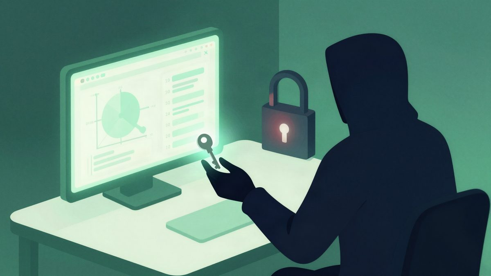

Optužen CTO tvrtke RansomwareHelp: navodno je krišom plaćao napadače, a žrtvama naplaćivao razliku

Američko tužiteljstvo optužilo je Juana Ricarda Palacia Escobara, suosnivača floridske tvrtke RansomwareHelp, za prijevaru putem elektroničkih komunikacija. Tvrtka je navodno javno tvrdila da nikad ne plaća otkupninu, a u FBI-jevoj sting operaciji s napadačima je dogovorila oko 6.000 dolara, dok je lažnoj žrtvi naplatila 16.010 dolara. Slučaj je dio niza postupaka protiv sigurnosnih tvrtki.
Juan Ricardo Palacio Escobar, 52-godišnji CTO i suosnivač floridske tvrtke RansomwareHelp, optužen je za wire fraud (prijevaru putem elektroničkih komunikacija). Optužnica je ovaj tjedan podignuta u Rhode Islandu. Tužiteljstvo tvrdi da je RansomwareHelp javno obećavao oporavak podataka bez plaćanja otkupnine, a napadačima je redovito plaćao za decryption key i žrtvama naplaćivao znatno više.
Na web stranici, koja više nije dostupna, RansomwareHelp se hvalio "naprednim kriptografskim alatima", stopom uspjeha većom od 99 posto i timom od 80 stručnjaka. Navodio je i da nikada ne plaća otkupninu u ime klijenata.
FBI-jeva zamka
FBI je izveo sting operaciju u kojoj su se istražitelji predstavljali i kao žrtva napada i kao izmišljena ransomware skupina. Kao žrtva poslali su RansomwareHelp-u lažnu poruku s otkupninom i rekli da ne žele plaćati. RansomwareHelp je odgovorio da ne pregovara s napadačima niti im plaća.
Palacio je potom navodno kontaktirao lažnu skupinu i tražio najnižu cijenu decryptora. FBI je odgovorio cijenom od 0,2 bitcoina, tada oko 13.000 dolara. Manje od 48 sati kasnije žrtvi je rečeno da je dijagnostika uspješna i da dešifriranje košta 13.260 dolara. Idući dan Palacio je navodno pokušao spustiti cijenu napadačima na 4.000 dolara. Dogovoreno je oko 6.000 dolara u bitcoinu, a lažnoj žrtvi naplaćeno je ukupno 16.010 dolara, uključujući dijagnostičku naknadu od 2.750 dolara.
Slučaj računovodstvene tvrtke
Paul Ihme, suosnivač sigurnosne tvrtke Soteria, rekao je za KrebsOnSecurity da je 2024. razgovarao s malom računovodstvenom tvrtkom koja je zbog Lockbit ransomwarea ostala bez pristupa svim podacima. RansomwareHelp im je poslao ponudu od 438.880 dolara, u kojoj su navedeni "510 prekonfiguriranih forenzičkih servera" i brute force postupci. Ihme tvrdi da su tehničke tvrdnje u ponudi besmislene i da su među navedenim metodama nebitni algoritmi za hashiranje lozinki, poput SHA-256.
RansomwareHelp je tražio neograničen udaljeni pristup mreži putem Anydeska. Ihme smatra da je to bilo i zato da bi se obrisale poruke s otkupninom koje ostavljaju napadači. Pregled mreže pronašao je samo jednu kopiju poruke, u backup snapshotu. Kad su se spojili na Lockbitov chat, vidjeli su da netko već nekoliko dana pregovara s napadačima. RansomwareHelp je u chatu molio Lockbit da žrtvi ne otkriva pregovore, a Lockbit je zbog duljine pregovora najavio rast otkupnine od 100.000 dolara za svaki dan odgode.
Računovodstvena tvrtka na kraju je angažirala etabliraniju sigurnosnu tvrtku, koja je dogovorila plaćanje Lockbitu. Ihme kaže da su platili otprilike upola manje nego što je tražio RansomwareHelp.
Nije jedini slučaj
Slučaj je dio niza nedavnih postupaka američkog Ministarstva pravosuđa protiv sigurnosnih tvrtki. Početkom listopada optužen je Edward Dubrovsky iz kanadske tvrtke Cybersteward, a slučaj je zapečaćen. Otprilike u isto vrijeme optužen je Zohar Pinhasi, CEO tvrtke MonsterCloud, koji je navodno platio napadačima 8 milijuna dolara, a klijentima naplatio 19 milijuna. U srpnju je ransomware pregovarač Angelo Martino osuđen na 70 mjeseci zatvora zbog suradnje s BlackCat/ALPHV skupinom.
Izvor: Hacker News
Povezani članci
- GTA 6 navodno ima 6,08 milijuna digitalnih predbilježbi i oko 598 milijuna dolara prihoda20. listopada 2026.
 ChatGPT agent navodno otkrio curenje osobnih podataka koje je dvije godine prolazilo neprimijećeno16. studenoga 2026.
ChatGPT agent navodno otkrio curenje osobnih podataka koje je dvije godine prolazilo neprimijećeno16. studenoga 2026.- Anthropic je podnio zahtjev za izlazak na burzu, valuacija bi mogla dosegnuti 2 bilijuna dolara26. listopada 2026.